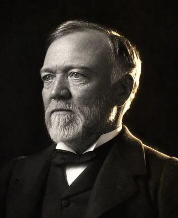

01새벽 2시 30분
불은 건물 지하에서 시작됐다. 아래층에는 증기 배관 자재를 만드는 회사 길리스 & 게오건이 있었다. 바닥과 벽은 기계유에 젖어 있었다. 야간 경비원 존 마호니는 보일러 화를 다스리러 내려갔다가 10분 만에 돌아와, 사무실 벽을 타고 오르는 불길을 발견했다. 물을 부어 봤지만 소용이 없었다.
소방대가 도착했을 때 불은 계단과 엘리베이터 통로를 타고 건물 전체로 번지고 있었다. 진화에 3시간이 걸렸고, 6번가 고가 철도 구조물까지 불이 옮겨붙었다. 옆의 상자 공장으로 번지지 않은 것이 그나마 다행이었다. 오전 8시에야 진화 종료 신호가 울렸다.
02그 방에 있던 것
테슬라의 실험실은 4층 전체를 차지하고 있었다. 그곳에는 고주파 전류와 다상 교류를 연구하며 만든 장치 400여 점이 있었다. 강연에서 쓰던 대형 코일, 상용화를 앞둔 새 발전기, 수백 개의 실험 모형, 설계도, 노트, 사진이 함께 있었다.
4층이 무너져 2층까지 내려앉았다. 장치는 알아볼 수 없는 형태로 뭉개졌다. 손실은 약 50,000달러로 추정됐고, 보험은 없었다.
훗날 그는 이렇게 회고했다. “박물관 관장이던 페어필드 오스본이 연구실에 와서 물었습니다. ‘도대체 왜 이런 것을 여기 두고 있습니까?’ 그때 그 장치들은 값을 매길 수 없는 400점이었습니다. 그는 박물관으로 옮기겠다고 했지만, 나는 그 조언을 듣지 않았고, 그것들은 사라졌습니다.”
03“무슨 말을 하겠습니까”
다음 날 아침, 직원들은 출근했다가 일자리가 사라진 것을 알았다. 아무도 그 소식을 전하러 나서지 못했다. 테슬라는 평소처럼 오전 10시에 나타나 자기 눈으로 확인했다.
처음 그는 얼떨떨해했다. “사실일 리가 없어!” 그는 폐허 앞을 오가며 말했다. 기자에게는 이렇게 말했다.
“슬퍼서 말을 할 수가 없습니다. 무슨 말을 하겠습니까. 반평생의 작업, 완성하는 데 수년이 걸린 기계 장치와 과학 기구가 1~2시간의 불에 쓸려 갔습니다. 달러와 센트로 어떻게 손실을 계산하겠습니까. 모든 것이 사라졌습니다. 다시 시작해야 합니다.”
— 1895년 3월 14일 신문 보도
말할 때 그의 눈에는 눈물이 있었다고 그날 신문은 적었다.
046시간 뒤
그런데 같은 날 오후, 그는 이미 다시 일하고 있었다. 당시 전기 잡지는 이렇게 전했다. “그는 처음에 큰 충격을 받았지만 침착하게 버텼고, 6시간 안에 새 오실레이터의 재건 설계를 만들고 배포하기 시작했다.”
그 오실레이터는 곧 다시 돌아갔다. 실험실을 밝히고 새 실험에 전류를 공급했다. 그는 46 이스트 휴스턴 스트리트에 새 실험실을 얻었다. 불에서 건진 것은 거의 없었지만, 그는 기억으로 다시 그릴 수 있었다.
그해 12월 뢴트겐이 X선을 발표했을 때, 테슬라는 화재에서 건진 ‘그림자 사진’을 그에게 보냈다. 불 전에 그는 크룩스관으로 사진을 찍고 있었고, 마크 트웨인의 초상이 얼룩진 이유를 그때는 몰랐다. 나중에 그것이 카메라 나사의 금속 그림자였다는 것을 알았다. 잃은 장치는 다시 만들 수 있었다. 잃은 기록은 일부만 돌아왔다.

반평생의 작업이
1~2시간의 불에 쓸려 갔습니다.
모든 것이 사라졌습니다.
다시 시작해야 합니다.
“The work of half my lifetime … Everything is gone. I must begin over again.”
05재가 되지 않은 것
테슬라는 훗날에도 그 화재를 꺼냈다. 그는 기억력이 비상했다고 전해진다. 사라진 설계도를 기억으로 다시 그릴 수 있었고, 사진은 다시 찍을 수 있었다.
1898년 그는 매디슨 스퀘어 가든에서 무선으로 조종하는 배를 선보였다. 1899년에는 콜로라도 스프링스로 가서 대규모 방전 실험을 했다. 화재가 앗아간 것은 그가 하려던 일의 순서였지, 방향은 아니었다.
우리는 그를 발명가로 기억한다. 하지만 그가 1895년 3월 13일에 보여준 것은 발명이 아니라 복구였다. 아무것도 남지 않은 아침에, 같은 날 오후 책상에 앉는 일.
재가 된 것은 기록이었다.
남은 것은 방법이었다.
테슬라는 화재 6시간 뒤 새 오실레이터 설계를 다시 그리고 있었습니다.
카드 문장 + 이 이야기 링크가 함께 전송됩니다
전기 이야기 1편씩,
메일로 받기
이런 이야기를 매일 아침 1편씩. 광고 없이, 읽는 데 5분.
언제든 클릭 1번으로 구독을 취소할 수 있습니다.
사료 노트 · 참고 자료 5건과 이미지 고지
- ‘Mr. Tesla’s Great Loss’, 1895년 3월 14일자 신문 보도 (Tesla Universe 전재) — 손실 50,000달러, 보험 없음, “I am in too much grief to talk”. https://teslauniverse.com/nikola-tesla/articles/mr-teslas-great-loss
- Electrical Review, ‘Destruction of the Tesla Laboratory by Fire’, 1895년 3월 20일 (Tesla Universe 전재) — 발화 지점, 야간 경비원, 진화 3시간, 6시간 뒤 재건 설계. https://teslauniverse.com/nikola-tesla/articles/destruction-tesla-laboratory-fire
- Electrical Review, ‘Tesla’s Laboratory Burned’, 1895년 4월 (Tesla Universe 전재) — 33-35 사우스 피프스 애비뉴, 전소. https://teslauniverse.com/nikola-tesla/articles/teslas-laboratory-burned
- Tesla Universe 연표, ‘5th Ave. Lab Burns’ — 4층 전체, 장치 400여 점, 50,000달러. https://teslauniverse.com/nikola-tesla/timeline/1895-tesla-loses-fifth-avenue-lab-fire
- Open Tesla Research, ‘Laboratories in New York (1889-1902)’ — 오스본의 회고, 46 이스트 휴스턴 새 실험실, X선 그림자 사진. https://teslaresearch.jimdofree.com/labs-in-new-york-1889-1902/
화재 시각은 자료에 따라 ‘2시 30분’과 ‘2시에서 3시 사이’로 적혀 있어, 당시 보도에 나온 2시 30분을 따랐습니다. 손실액 50,000달러는 테슬라 본인의 추정입니다. 건물 층수는 6층, 연구실은 4층 전체라는 기록을 따랐으며, 일부 자료의 ‘위층 2개 층’ 표현과는 차이가 있습니다. 인물 초상은 AI로 생성한 에디토리얼 이미지입니다.
